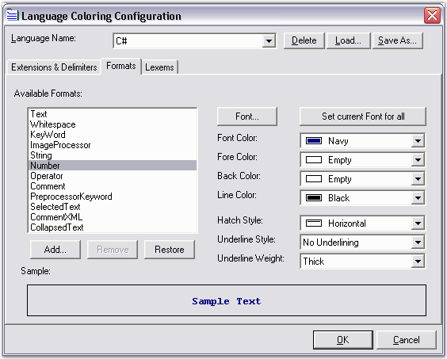

Essential Edit supports Syntax Highlighting and Code Coloring of some of the commonly used languages with the help of configuration files. It provides pre-defined configuration files for languages like SQL, Delphi or Pascal, HTML, VB.NET, XML, Java, VBScript, JScript and C#.
These configuration settings are made available in the EditControl.Configurator.KnownLanguages collection. The order of the languages in this collection is as follows: C#, Delphi, HTML, Java, JScript, Default Text, SQL, VB.NET, VBScript and XML.
Pre-defined Configuration Files
You can set the Edit Control to use any of the pre-defined configuration settings by using the ApplyConfiguration method, as shown below.
|
[C#]
// Considering configuration settings for SQL as an example. // Using the KnownLanguages enumerator. this.editControl1.ApplyConfiguration(KnownLanguages.SQL);
// Using the file extension of the associated language. this.editControl1.ApplyConfiguration(this.editControl1.Configurator.GetLanguage("sql") as IConfigLanguage);
// Using the associated index in the KnownLanguages collection. this.editControl1.ApplyConfiguration(this.editControl1.Configurator.KnownLanguageNames[1] as IConfigLanguage);
// Using the name of the language in the associated configuration file. IConfigLanguage config = this.editControl1.Configurator.GetLanguage("sql") as IConfigLanguage; this.editControl1.ApplyConfiguration(config.Language); |
|
[VB.NET]
' Considering configuration settings for SQL as an example. ' Using the KnownLanguages enumerator. Me.editControl1.ApplyConfiguration(KnownLanguages.SQL)
' Using the file extension of the associated language. Me.editControl1.ApplyConfiguration(Me.editControl1.Configurator.GetLanguage("sql"))
' Using the associated index in the KnownLanguages collection. Me.editControl1.ApplyConfiguration(Me.editControl1.Configurator.KnownLanguageNames(1))
' Using the name of the language in the associated configuration file. Dim config As IConfigLanguage = Me.EditControl1.Configurator.GetLanguage("sql") Me.editControl1.ApplyConfiguration(config.Language) |
You can also load any of the configuration settings by using the ResetColoring method, as shown in the code below.
|
[C#]
// Set the Edit Control to use the configuration settings for the default language. this.editControl1.ResetColoring(this.editControl1.Configurator.KnownLanguages[0] as IConfigLanguage);
// Set the Edit Control to use the configuration settings for SQL. this.editControl1.ResetColoring(this.editControl1.Configurator.KnownLanguages[1] as IConfigLanguage);
// Set the Edit Control to use the configuration settings for SQL using the file extension. this.editControl1.ResetColoring(this.editControl1.Configurator.GetLanguage("sql") as IConfigLanguage);
// Set the Edit Control to use the configuration settings for Pascal. this.editControl1.ResetColoring(this.editControl1.Configurator.KnownLanguages[2] as IConfigLanguage);
// Set the Edit Control to use the configuration settings for Pascal using the file extension. this.editControl1.ResetColoring(this.editControl1.Configurator.GetLanguage("pas") as IConfigLanguage);
// Set the Edit Control to use the configuration settings for HTML (light). this.editControl1.ResetColoring(this.editControl1.Configurator.KnownLanguages[3] as IConfigLanguage);
// Set the Edit Control to use the configuration settings for HTML (light) using the file extension. this.editControl1.ResetColoring(this.editControl1.Configurator.GetLanguage("html") as IConfigLanguage);
// Set the Edit Control to use the configuration settings for VB.NET. this.editControl1.ResetColoring(this.editControl1.Configurator.KnownLanguages[4] as IConfigLanguage);
// Set the Edit Control to use the configuration settings for VB.NET using the file extension. this.editControl1.ResetColoring(this.editControl1.Configurator.GetLanguage("vb") as IConfigLanguage);
// Set the Edit Control to use the configuration settings for XML. this.editControl1.ResetColoring(this.editControl1.Configurator.KnownLanguages[5] as IConfigLanguage);
// Set the Edit Control to use the configuration settings for XML using the file extension. this.editControl1.ResetColoring(this.editControl1.Configurator.GetLanguage("xml") as IConfigLanguage);
// Set the Edit Control to use the configuration settings for C#. this.editControl1.ResetColoring(this.editControl1.Configurator.KnownLanguages[6] as IConfigLanguage);
// Set the Edit Control to use the configuration settings for C# using the file extension. this.editControl1.ResetColoring(this.editControl1.Configurator.GetLanguage("cs") as IConfigLanguage); |
|
[VB.NET]
' Set the Edit Control to use the configuration settings for the default language. Me.editControl1.ResetColoring(Me.editControl1.Configurator.KnownLanguages(0))
' Set the Edit Control to use the configuration settings for SQL. Me.editControl1.ResetColoring(Me.editControl1.Configurator.KnownLanguages(1))
' Set the Edit Control to use the configuration settings for SQL using the file extension. Me.editControl1.ResetColoring(Me.editControl1.Configurator.GetLanguage("sql"))
' Set the Edit Control to use the configuration settings for Pascal. Me.editControl1.ResetColoring(Me.editControl1.Configurator.KnownLanguages(2))
' Set the Edit Control to use the configuration settings for Pascal using the file extension. Me.editControl1.ResetColoring(Me.editControl1.Configurator.GetLanguage("pas"))
' Set the Edit Control to use the configuration settings for HTML (light). Me.editControl1.ResetColoring(Me.editControl1.Configurator.KnownLanguages(3))
' Set the Edit Control to use the configuration settings for HTML using the file extension. Me.editControl1.ResetColoring(Me.editControl1.Configurator.GetLanguage("html"))
' Set the Edit Control to use the configuration settings for VB.NET. Me.editControl1.ResetColoring(Me.editControl1.Configurator.KnownLanguages(4))
' Set the Edit Control to use the configuration settings for VB.NET using the file extension. Me.editControl1.ResetColoring(Me.editControl1.Configurator.GetLanguage("vb"))
' Set the Edit Control to use the configuration settings for XML. Me.editControl1.ResetColoring(Me.editControl1.Configurator.KnownLanguages(5))
' Set the Edit Control to use the configuration settings for XML using the file extension. Me.editControl1.ResetColoring(Me.editControl1.Configurator.GetLanguage("xml"))
' Set the Edit Control to use the configuration settings for C#. Me.editControl1.ResetColoring(Me.editControl1.Configurator.KnownLanguages(6))
' Set the Edit Control to use the configuration settings for C# using the file extension. Me.editControl1.ResetColoring(Me.editControl1.Configurator.GetLanguage("cs")) |
External Configuration File
You can plug-in an external configuration file that defines a custom language to the Edit Control by using the Configurator.Open and ApplyConfiguration methods in conjunction, as shown in the below code snippet.
|
[C#]
// Plug-in an external configuration file. this.editControl1.Configurator.Open(configFile);
// Apply the configuration defined in the configuration file. this.editControl1.ApplyConfiguration("CustomLanguage"); |
|
[VB.NET]
' Plug-in an external configuration file. Me.editControl1.Configurator.Open(configFile)
' Apply the configuration defined in the configuration file. Me.editControl1.ApplyConfiguration("CustomLanguage") |
Run Time Configuration Settings
Syntax Highlighting and Code Coloring can be implemented at run time by using the Language Coloring Configuration Editor.

Figure 43: Configuration Customization Dialog Box
The Language Coloring Configuration Editor can be invoked programmatically as follows.
|
[C#]
IConfigLanguage activeLang = this.editControl1.Parser.Formats as IConfigLanguage;
// Create an instance of ConfigurationDialog. ConfigurationDialog editConfig = new ConfigurationDialog(this.editControl1.Configurator, activeLang); if(editConfig.ShowDialog(this) == DialogResult.OK && activeLang != null) { IConfigLanguage newLang = editConfig.Configurator.KnownLanguageNames.Contains(activeLang.Language) ? editConfig.Configurator[activeLang.Language] : editConfig.Configurator.DefaultLanguage; if(newLang != null) { // Set language configuration instance object. this.editControl1.Configurator = editConfig.Configurator;
// Applies coloring of the specified language to the text. this.editControl1.ApplyConfiguration(newLang); } } |
|
[VB.NET]
Dim activeLang As IConfigLanguage = Me.EditControl1.Parser.Formats
' Create an instance of ConfigurationDialog. Dim editConfig As New frmConfigDialog(Me.editControl1.Configurator, activeLang)
If editConfig.ShowDialog(Me) = DialogResult.OK AndAlso Not (activeLang Is Nothing) Then Dim newLang As IConfigLanguage = If(editConfig.Configurator.KnownLanguageNames.Contains(activeLang.Language), editConfig.Configurator(activeLang.Language), editConfig.Configurator.DefaultLanguage) If Not (newLang Is Nothing) Then ' Set language configuration instance object. Me.editControl1.Configurator = editConfig.Configurator
' Applies coloring of the specified language to the text. Me.editControl1.ApplyConfiguration(newLang) End If End If |
A sample which demonstrates the above features is available in the below sample installation path.
..\My Documents\Syncfusion\EssentialStudio\Version Number\Windows\Edit.Windows\Samples\2.0\Syntax Highlighting\CustomConfigFileDemo
See Also
Creating a Custom Language Configuration File,
 XML Based Configuration Files
XML Based Configuration Files